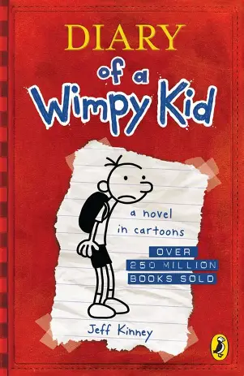
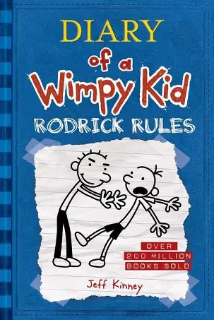

Diary of a Wimpy Kid

Release Date: April 1, 2007
Recommended Age: 8+
Genre: Humor/Children's Fiction
Rating: ⭐⭐⭐⭐⭐
Greg Heffley begins his middle school journey, documenting his awkward, hilarious, and relatable experiences in his journal.
Diary of a Wimpy Kid: Rodrick Rules

Release Date: February 1, 2008
Recommended Age: 8+
Genre: Humor/Children's Fiction
Rating: ⭐⭐⭐⭐
Greg faces new challenges as his older brother Rodrick makes his life miserable, leading to chaotic and comedic sibling conflict.